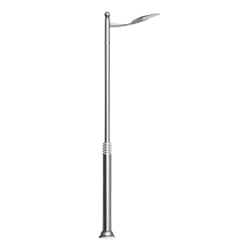
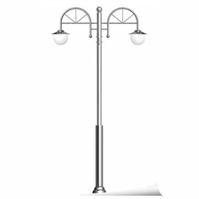
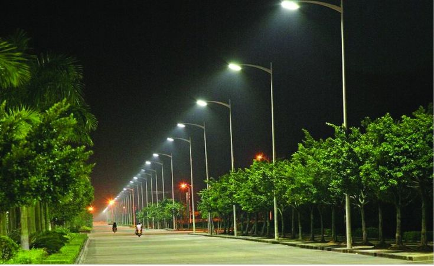

전체 제품 목록
주원테크의 모든 가로등주 제품을 확인하세요.

Standard Type
스테인리스 가로등주 기본형
- 재질: STS304 (스테인리스 스틸)
- 도금: 용융아연도금 (KS D 8308)
- 용도: 일반 간선도로 및 보도

Double Arm Type
스테인리스 이등용 가로등주
- 재질: STS304 (스테인리스 스틸)
- 도장: 내후성 분체도장 (선택사항)
- 용도: 4차선 이상 광폭 도로

Solar Smart Type
스마트 태양광 LED 가로등
- 구성: 고효율 태양광 패널 + 리튬 배터리
- 기능: 일몰 후 자동 점등, 디밍 제어
- 용도: 산책로, 전력 수급 곤란 지역

Steel Pipe Type
강관 가로등주
- 재질: 일반 구조용 탄소강 (KS D 3566)
- 도금: 용융아연도금
- 용도: 도로, 주차장, 공단지역

Design Type
유럽형 디자인 가로등주
- 디자인: 유럽 클래식 스타일
- 도장: 내후성 분체도장
- 용도: 공원, 관광지, 특수 경관도로